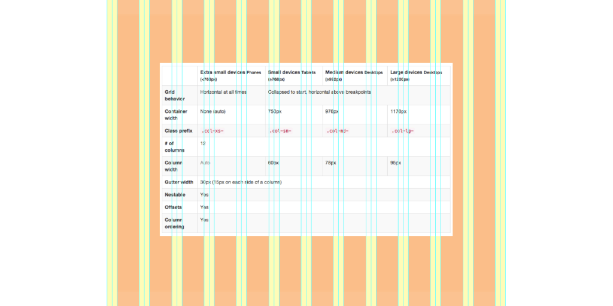

00
:
00
:
00
Savoir-Faire Linux
La grille adaptative
Notes
Pourquoi ?
Standardisation, standardisation, standardisation !
Notes
Visuels
Margin, padding
Comportements
Comment la grille se présente sous Twitter Bootstrap 2.3.2/3 ?
Démonstration sous Twitter Bootstrap 3
Démonstration sous Twitter Bootstrap 2.3.2
Notes
Des classes CSS qui englobent et définissent notre grille
Des classes CSS pour définir nos colonnes
La largeur des colonnes peut varier entre les différents médiums utilisés
Modification possible de l’ordre des colonnes
Flexibilité
Nous pouvons définir notre propre grille avec les mixins sous TB3
”Respect the grid” - Émilien
Notes
À retenir

Notes
Pour Twitter Bootstrap 3
Gouttière implicite (non visible mais bien présente)
15px de chaque côté de toutes les colonnes; incluant la première et la dernière colonne !
Grande flexibilité pour passer d’une grille mobile à une grille desktop
Nous l’utiliserons dans la plupart de nos projets qui ne sont pas sous Drupal ou Liferay.
Notes
Pour Twitter Bootstrap 2.3.2
Gouttière explicite
Liferay l’utilise dans sa console d’administration
Moins flexible que la dernière version
Notes
Table of Contents
Table of Contents
Savoir-Faire Linux
1
Pourquoi ?
2
Comment la grille se présente sous Twitter Bootstrap 2.3.2/3 ?
3
”Respect the grid” - Émilien
4
À retenir
5
Pour Twitter Bootstrap 3
6
Pour Twitter Bootstrap 2.3.2
7
Help
Help
Table of contents
t
Exposé
ESC
Autoscale
e
Full screen slides
f
Presenter view
p
Source files
s
Slide numbers
n
Blank screen
b
Notes
2
Help
h